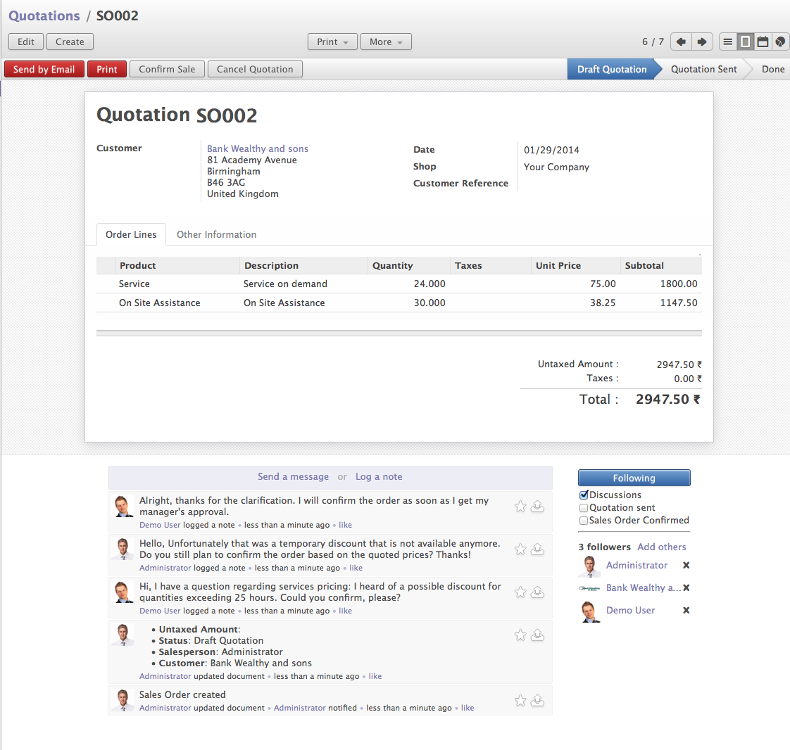
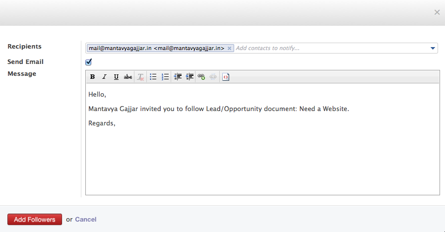
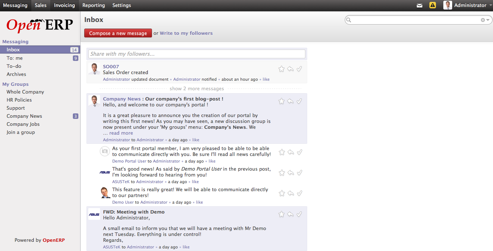
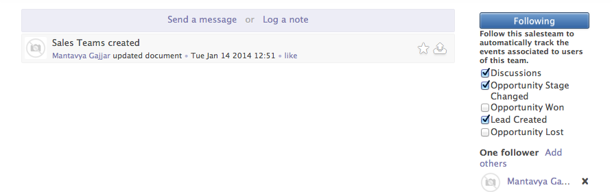
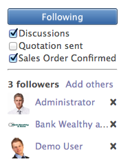

OpenERP Wall, A new wave of Enterprise Social Communication¶
With the launch of Version 7.0, OpenERP have proved that it is 4th generation Enterprise Application, there are various parameters of applications to be count as a 4th generation ERP applications and Social communication in Enterprise is one of them.
OpenERP simplifies the way of managing the documents and all related communications on those documents in such way that you don’t need to track or search your mailbox. You will get everything including communication and notes on the same document you are working on.
Negotiation on Quotation¶
Lets take an example of quotation you propose to one of your prospects, It will be too difficult to track all versions of quotations you made during the negotiation you had on that quotation. How cool if you get all those communication and versions of quotation on the same quotation.
Communication on Quotation
We can see all the communication had on the quotation by Salesman, customer and internal team member during finalization of Proposal. OpenERP can send and receive emails directly from the document without any email client, you just need to configure email servers for sending and receiving emails.
Enterprise Social Control¶
OpenERP developed a generic feature called “Chatter” that can be apply to any documents. When you have control below document says that document is chatter enabled, and you can send an email directly from that document. When your recipient(s) replied to that email you will get the reply on same document just like message thread in email client.
Along with html email content you can also attached documents from the central document repository while sending an emails. You can also be able to see all the attachment(s) on message sent by recipient(s) on the same document.

Communications on Leads
Followers¶
When we say followers, they are not a users of Twitter, Facebook or any social media. They are the users within your organization like employees, customers or suppliers.
You can make the document visible and accessible for them depending on the access control by adding those on document as a followers. You can send a custom email message as well when inviting someone to follow the document.
Invitation to work jointly on Opportunity
Recipients will get direct link to the document at bottom of an email, on successfully login to OpenERP by following that link he or she will be able to access the document with respect to the access control associated with that user.
OpenERP Wall¶
As a Sales manager you are responsible to manage all the activities related sales department. Track the leads, opportunities and proposals made for prospects is the key activity you want to keep on watch. It will be difficult for you to visit each and every documents like leads, opportunity and quotations and look at the communication attached with those documents in terms of chatter.
OpenERP Wall
You need a kind of white board where you will get regular updates form your team. OpenERP Wall is exactly that white board where you will get an updates form leads, opportunities, quotations, meetings, and schedules and completed phone calls.
Subscribe to Team Activities¶
Sales Team
In order to track the sales activity of team you should follow the team and subscribe the channel / event depending on that you will get notify on your wall.
Channels¶
All the followers will get updates on their wall depending on which channel they are following. channels are nothing but a kind of event performed on the related document. Like almost all the document have a default channel which is “Discussion”, so when discussion happen on document you will get notify on the wall under the same document.
Channels of Quotation
Quotations offers 3 different channel you can choose after following the quotation,
Discussion : You will get notify when any discussion happen on quotations, they can be as internal discussion, email send to customer or even an email receive from customers will be count as a discussion.
Quotation sent: You will get notification on every time when salesman send quotations to customer by email using “Send by Email” button.
Order Confirmed: When salesman confirm the sales order you will get notify on your wall under the same Sales Order.
Note
All the new communication is available at the end of each thread, while on the document you will be able to see latest communication on top. User will also get notified on the email address user have enter on Preference page and receive email policy.
OpenERP Mobile¶
OpenERP Mobile is Enterprise Social Client based on Android, enables you to access your OpenERP Wall, Meetings, Notes and Messages from groups, encourage you to updated with companies’ current activities for which you are responsible. You can also share messages, notes and schedule meetings through the same application.

Major Features :
- Offline Access
- Multiple Account Support
- Widget for Messages and Notes
- Integrated with Address Book and Calendar
- OpenERP Social Client based on Android
- OpenERP Social Client based on Android
Mobile applications will be release along with the OpenERP 8.0, you can test beta release of OpenERP Mobile from Play Store.